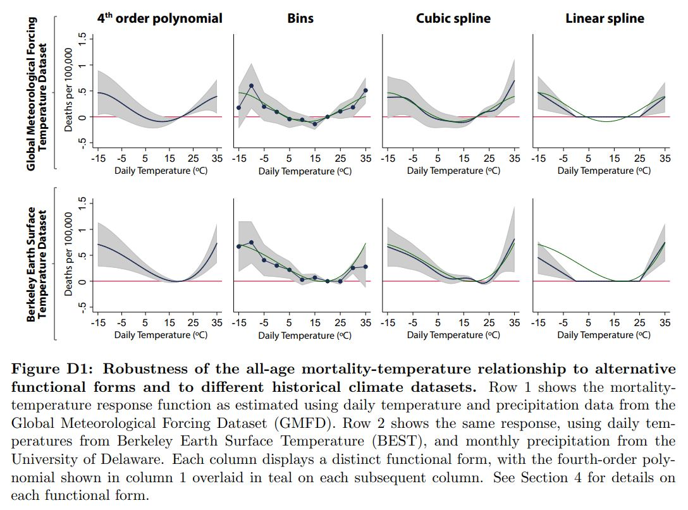

Functional forms: pros, cons, and methods¶
Returning to the “true model” of your process, the decisions around how to generate a linear expression that you can estimate have important implications. Different functional forms serve different purposes and describe different underlying processes. Some of the frequently used functional forms along with a good reference for understanding them in detail are listed below.
Bins¶
Bins offer a very flexible functional form, although the choice of bin edges means that they are not as “non-parametric” as often assumed. It is also highly sensitive to existence of outliers in data. This can particularly be an issue for extrapolation when the results are used for projections: only the estimate for the extreme bins will be used.
The bin widths should generally be even to facilitate easy understanding, although the lowest and highest bins can go to negative and positive infinity (or the appropriate analog). You may want to have smaller size bins around weather values where we expect most of the response to occur and where there is a lot of data, but be prepared to also show evenly-spaced bins.
The interpretation of a binned result is in terms of the time unit used. For example, if daily temperatures are used, then the marginal effect for a given bin is the additional effect of “one more day” for which the temperature falls into that bin.
To calculate bin observations, count up the number of timesteps where the weather predictor falls into each bin: $\(T_{it} = \sum_{p \in i} \psi_{p} \sum \mathbf{1} \left \{ {T_{p i t} \in Bin_k} \right \}\)\( where \)\psi_{p}\( is the weight assigned to the \)p$ grid cell.
Polynomial¶
Polynomial specifications balance smooth dose-response curves with the flexibility of increasing the effective resolution of the curve by increasing the degree of the polynomial. Using more degrees improves the ability of the curve to fit the data, but may lead to over-fitting. To choose the number of terms in the polynomial, consider cross-validation.
Another benefit of polynomials for climate change estimates is that they provide smooth extrapolation to higher temperatures. Again, it is important to highlight the fact that the evaluation of the dose-response curve at temperatures outside the bounds of the observed data reflects assumptions, rather than evidence. Cross-validation that leaves out the latest periods or most extreme temperatures can improve confidence in these assumptions.
In calculating the predictor values for a polynomial, consider the scale of the data-generating process. If it is a local process, the high-resolution weather values should be raised to powers before aggregating up to the regions in the economic data. That is, the the predictor for the \(k\)-th power of the polynomial is $\(f(T_{it}^k)=\sum_{p \in \Theta(i)} \psi_{p} T_{p i t}^k\)\( where \)\psi_{p}\( is the weight assigned to the \)p$ gridcell.
The dose-response regression would then be applied as follows $\(F(T_{it})=\sum_{k} \beta_k f(T_{it}^k)\)$
while the coefficients can be interepted as describing a local dose-response relationship: $\(F(T_{pit})=\sum_{k} \beta_k T_{pit}^k\)$
Restricted cubic spline¶
Restricted cubic splines produce smooth dose-response curves, like polynomials, but mitigate some of the problems that polynomials with many terms have. Whereas polynomials with high-order terms can produce very extreme results under extrapolation, RCS always produces a linear extrapolation. RCS also provides additional degrees of freedom through the placement of knots, and this can be used either to reflect features of the underlying process being modeled or to improve the fit.
In the case where knots are choosen to maximize the fit of the curve, cross-validation is the preferred approach for both selecting the number of knots and their placement. The reference in this subsection title on cubic splines can be helpful in deciding the knot specifications.
Once knot locations are determiend, the weather data needs to be translated into RCS terms. As before let the gridded weather be \(T_{p i t}\) and let there be \(n\) knots, placed at \(T_1<T_2<...<T_n\). Then we have a set of \((n-2)\) terms, here indexed by \(k\) and defined as: $\(f(T_{i t})_k= \sum_{p \in \Theta(i)} \psi_{p} \{(T_{p i t}-T_k)^3_+ - (T_{p i t} - T_{n-1})^3_+ \frac{T_n-T_k}{T_n-T_{n-1}}+(T_{p i t} - T_{n})^3_+ \frac{T_{n-1}-T_k}{T_{n}-T_{n-1}}\}\)\( \)\(\forall k \in \{1,2,...,n-2\}\)\( where, \)\psi_{p}\( is the weight assigned to the \)p$ grid.
Each spline term in the parentheses \((\nabla)^3_+\) e.g. \((T_{p i t} - t_{n-1})^3_+\) is called a truncated polynomial of degree 3, which is defined as follows:
\(\nabla^3_+=\nabla^3_+\) if \(\nabla^3_+>0\)
\(\nabla^3_+=0\) if \(\nabla^3_+<0\)
As with the polynomial, the dose-response regression would then be applied as follows $\(F(T_{it})=\sum_{k} \beta_k f(T_{it})_k\)$
while the coefficients can be interepted as describing a local dose-response relationship:
Linear spline¶
A linear spline provides a balance between the smoothness of RCS and the direct response curve to temperature correspondance of bins. The segments between knots here are lines. As with RCS, the choice of knot locations is very important.
One defition of terms for a linear spline for a spline with \(n\) knots at \(T_1<T_2<...<T_n\) is: $\(f(T_{it})_0=\sum_{p \in \Theta(i)} \psi_{p} T_{p i t}\)\( \)\(f(T_{it})_k=\sum_{p \in \Theta(i)} \psi_{p} (T_{p i t}-T_k)_+\)\( where, \)\psi_{p}\( is the weight assigned to the \)p$ gridcell.
And, each spline term in the parentheses \((\nabla)_+\) e.g. \((T_{p i t} - T_2)_+\) is called a truncated polynomial of degree 1, which is defined as follows:
\(\nabla_+=\nabla_+\) if \(\nabla_+>0\)
\(\nabla_+=0\) if \(\nabla_+<0\)
We generally try to work with many functional forms in a paper because it serves dual purpose of being a sanity check for researchers’ code and a robustness check for readers’ confirmation. However, we need to take decision on the main specification that we want in the paper. To do this, we formally rely on tests such as cross-validation (explained below), but we can also eyeball at the fit of different functional forms by printing overlaid graphs in a way that is suitable for the exercise. An example is shown in the figure below:
Example of reduced-form regression plots for different functional forms  Source: Carleton et al. (2019).
Cross-validation¶
Cross-validation can be done to check the internal validity and the external validity of the model estimates. For checking internal validity, the model can be fit to a subset of the dataset, and evaluated on the remainder. For example, you can leave particular regions out of your regression or remove a random 1/k of your data (k-fold cross validation) instead of running a full-sample regression. For gauging external validity, the model is run on some new dataset that has not been not used in the model-evaluation process. For example, by predicting the response for a new country using global regression model estimates and comparing it to the actual observations.
Cross-validation is not universally performed by researchers, and many people continue to rely only on R-squared statistics. However, R-squared statistic can perform poorly even in very simple cases. Therefore, cross-validation can be an effective approach for doing model-selection.
Some examples on the use of cross-validation exercise include deciding on degree of polynomial, cutoff knots’ positions for splines, and selecting weather variables for a regression. To do a k-fold cross validation exercise for deciding on polynomial degree, we run our test specifications (say polynomials of degree 2, 3, 4 and 5) on the data, each time excluding a subset, and evaluate how well the fitted model predicts the excluded data. To fix a metric for making this decision, we can rely on root-mean-square-error (RMSE) statistic. So, the specification with the lowest RMSE will be the most preferred specification here. Having said that, we usually employ combination of techniques, like eye-balling and RMSE, to take decision on the most preferred specification.